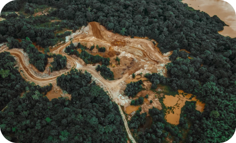
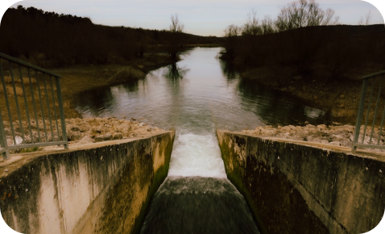

O que é o garimpo ilegal?
O garimpo ilegal é a extração de minerais, principalmente ouro, sem autorização ou fora das normas estabelecidas por lei. Essa prática ocorre principalmente na Amazônia e está associada a impactos ambientais e sociais graves.
Extração sem autorização legal
Atuação em áreas protegidas
Falta de controle ambiental
Como essa atividade acontece?
O garimpo ilegal opera sem fiscalização adequada e envolve uma cadeia que vai da extração até a venda irregular do ouro.
1
Extração
2
Transporte
3
Venda Ilegal
4
Inserção no mercado
O impacto na prática
A atividade transforma áreas naturais em regiões com danos difíceis de reverter.
Floresta preservada:

Área degradada pelo garimpo:

Quais são os impactos?

A retirada da vegetação causa perda de biodiversidade, destrói habitats e contribui para o aumento das mudanças climáticas.
Desmatamento

Esse metal tóxico se espalha pela água, contaminando peixes e toda a cadeia alimentar, podendo chegar até o ser humano.
Contaminação da água
O garimpo ilegal gera conflitos, violência, exploração e perda de território, afetando diretamente o modo de vida dessas populações.
Impactos Sociais
A exposição ao mercúrio pode provocar problemas neurológicos, danos ao sistema nervoso, intoxicação e até malformações.
Problemas de Saúde
Denuncie atividades ilegais
O garimpo ilegal é um crime ambiental. Sua denúncia pode ajudar a proteger o meio ambiente e comunidades afetadas.
IBAMA
Órgão responsável pela fiscalização ambiental no Brasil.
Polícia Federal
Atua em crimes ambientais e atividades ilegais em território nacional.
Denúncia Anônima
Sinta-se seguro para fazer denúncias sem identificação.